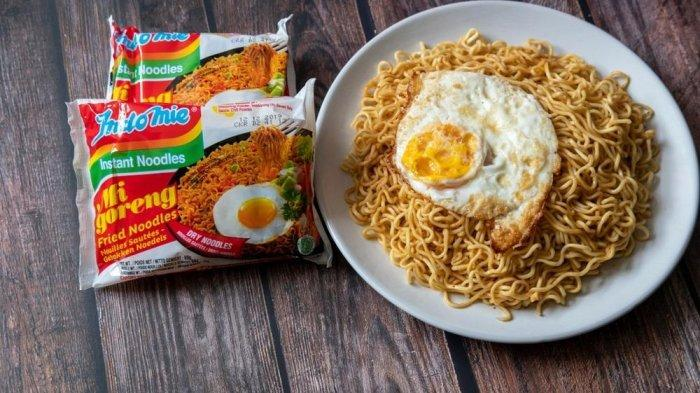

Home
Indomie Recipe

INDOMIE!!!
The BEST instant noodle in the world.
Once you taste this instant noodle, there will be no other instant noodle that can compete with this.
Ingredients
- 2 Packs of Indomie Noodles
- 2 glasses of water
- 3 small red pepper
- 1 small ball of Onions
- Preferred meat source (Eggs or Chicken are the most widely used).
- 3 Sausages
- Green beans and carrot
Steps:
- Pour 2 glasses of water into a clean pot and leave to simmer on medium flame.
- Add spices (in the Ramen packet), add mixed vegetables with chopped pepper and onions and allow to boil for 1 minute. Make sure the Pot is covered from the beginning.
- Now break the Noodles and pour into the boiling water with all those ingredients already in. Distribute it evenly around the pot then cover. Leave to cook for 5 minutes while occasionally stirring it so the heat goes around.
- Just before it is done, add the Sausages (you want them semi cooked so they can retain a little grit).
- Once it’s cooked and the tenderness is to your liking, serve hot together with your Chicken or Eggs on the plate.